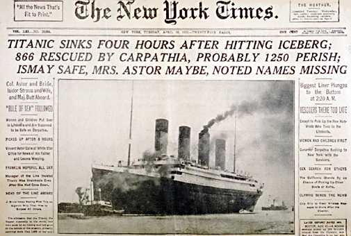

Saturday, March the 31th, 2012
back to: title, date or indexes
I noticed that on BBC1 yesterday there was the first in a short series of programmes called Titanic With Len Goodman—Mr Goodman being one of the judges from Strictly Come Dancing. It is a curious combination of presenter and subject, and I wonder if we can look forward to Hindenburg With Alesha Dixon, The Munich Air Disaster With Bruno Tonioni, The Tay Bridge Disaster With Craig Revel-Horwood, The Lisbon Earthquake With Arlene Phillips, and, perhaps, The Black Death With Tess Daly.
